$N Multistroke Recognizer Limitations
Jacob O. Wobbrock1 and Lisa Anthony2
1University of Washington and 2Lockheed Martin Advanced Technology Laboratories
This page explains the limitations of the $N multistroke recognizer. It is important to note that all gesture recognizers have limitations. As a prototyping tool, $N strives to be succinct, easy to inspect, modify, and deploy, and capable of good recognition with little training. On the vast majority of simple user interface gestures, $N will perform very well. This page shows the few cases where $N breaks down.
1. Collisions possible due to resampling "through the air."
When a new multistroke is defined, $N generates many possible ways of making that multistroke. Specifically, $N creates a set of unistrokes for each multistroke that together represent all combinations of stroke order and direction. This allows the user to define a multistroke once instead of for every possible variation.
Although a powerful generalizing scheme, a drawback is that "under the hood," some gestures may appear the same to $N, especially if the checkbox options for bounded rotation invariance and/or matching only the same number of strokes are not used.
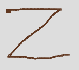 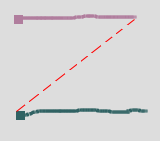The one-stroke "z" and the two-stroke equals sign ("=") collide because when the equals sign is permuted, one of its permutations is connected as shown above. The remedy for this problem is to use the option for matching only the same number of strokes.
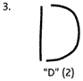 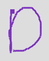However, one advantage of this approach is that it allows users to make gestures with fewer strokes than those with which gestures were originally defined. For example, the template for "D" was created with two strokes, which, as noted above, can be made in either order and in either direction owing to $N's generalization scheme. Because $N's strokes are connected "through the air," a user who writes a "D" with one stroke, as many people do, can do so and retain high accuracy.
2. Making more strokes than were defined and not with the same "flow."
If a user makes more strokes for a gesture than that with which the gesture was defined, the outcome can either be successful or problematic, depending on whether or not the user maintains the same "flow" as the original gesture definition. By "flow," we mean maintaining the same order and directionality of the original gesture.
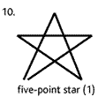 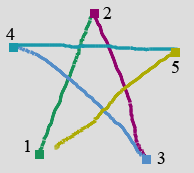 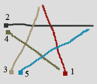 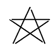For example, the "five-point star" gesture was defined with one continuous stroke. Owing to $N's generalization scheme, this stroke can be made in either of two directions. The "flow" of the star moves in whichever direction is used to make the gesture. If a candidate gesture is made with multiple strokes as shown in the middle image, the "flow" must be maintained. (This gesture was recognized correctly with a score of 0.92.) However, if multiple strokes are used in an order inconsistent with the flow of the original gesture, the gesture will not be recognized properly. (The right drawn star was recognized as "N" with a score of 0.61.) For the right drawn star to be recognized properly, a template would have to be defined with five component strokes like the one shown at far right. However, defining such a gesture may incur a slowdown because a 5-stroke multistroke template results in 3840 unistrokes. Although all of these are created, most are ignored during recognition because of an angle-based optimization used by $N, which keeps recognition speed fast.
 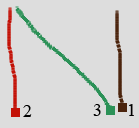
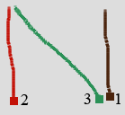
As an example of permitting this flexibility, the "N" gesture was defined with three separate strokes. Thus, the right stroke was recognized correctly with a score of 0.88 despite its unconventional stroke ordering and direction.
3. Rotating only some parts of a gesture and not others.
$N is, by default, fully rotation-invariant, allowing gestures to be made at any orientation. A checkbox option provides for bounding rotation invariance to just +/- 45 degrees, meaning a gesture must be drawn more-or-less at the same angle as its template. Regardless, this all pertains to the whole gesture taken as a single unit to be rotated or not. If only some parts of a gesture are rotated but not others, rotation invariance cannot succeed.
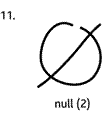 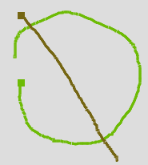 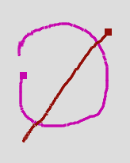The "null" gesture consists of a circle drawn from the top and diagonal slash. In the middle image, the gesture has been made rotated 90 degrees counterclockwise. The whole gesture is rotated and the recognition result was successful with a score of 0.93. However, in the rightmost image, only the circle has been rotated, not the slash along with it (misrecognized as "N" with a score of 0.78). This "internal rotation" of some gesture parts but not others results in poor recognition rates for $N. Upon reflection, one should realize that allowing internal rotation of all parts would effectively break most symbols and allow them to be extremely different than they were originally drawn. (This potential only seems reasonably with "null" because of its circle's rotational symmetry.)
4. Centroid happens to be near first point.
During its operation, $N rotates a gesture such that the angle from its centroid (mean (x,y) point) to its first point is zero degrees (i.e., horizontal from left-to-right). This works well in the vast majority of cases, but becomes unreliable if the centroid happens to fall close to or on top of the gesture's first point.
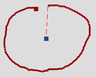 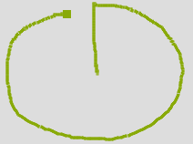 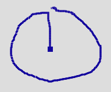A custom bullseye gesture might be defined as a circle with a dot at its center (left). Regardless of whether the dot is made first or second, one of the two underlying unistroke permutations will have the dot as the first point. The center drawing has the dot as the last point. It was recognized properly with a score of 0.96. The right image has the center dot as the first point. Because of this gesture's geometry, the centroid falls very near the first point, and this causes unreliable angle calculations due to small distances, and poor recognition can result. The right image was misrecognized as "D" with a socre of 0.72. Note that this problem is quite rare; it is not enough to have a gesture's beginning (or ending) point at its center, but it also must be the case that the mean (x,y) point also falls very near this point. This is unlikely for most geometries, but can happen as the bullseye illustrates.
5. Gesture's gestalt is its important feature.
A limitation of most, if not all, template matchers is that they do not extract higher-level features over which they can generalize. This gives template matchers a benefit in terms of directness and predictability, but a drawback is the inability to "reason" or "infer" higher-level gesture properties.
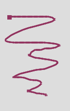 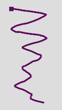 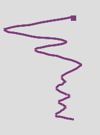A gesture for "scratching things out" or "erasing" might be defined like the one on the left. It's distinguishing characteristic is its gestalt of a fast back-and-forth motion. However, it will be matched as would any symbol, where its points will be compared to a candidate's points for closeness. Thus, there's no guarantee that the middle or right gestures will be well-matched, despite what humans can perceive as true similarity. As it happens, the middle gesture was properly recognized by $N based on the left definition with a score of 0.85, but the right gesture was misrecognized as "I" with a score of 0.77.